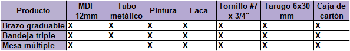
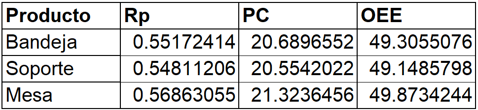

Se identifica que los tres productos comparten más del 70% de materias primas y 50% de procesos. En las siguientes tablas se muestran los materiales y procesos que corresponden a cada producto.

Tabla de materiales.
Tabla de procesos.
Dado que se comparten una gran cantidad de procesos que pueden ser realizados con las mismas máquinas y equipos de manufactura, se decide fabricar los tres productos de forma simultánea.
Se tendrá en cuenta el siguiente orden de procesos para el cálculo de tiempos e indicadores KPI.
Orden de procesos.
Con una producción mensual de 400 unidades de cada producto, se requiere:
Como salida, se tiene mensualmente una entrega de 1200 productos, 400 de cada tipo.
Se considera una cantidad de 20 días de trabajo por mes. Cada día se trabaja un turno, el cual es de 8 de la mañana a 5
de la tarde. Se tiene en cuenta un tiempo de almuerzo de una hora, así como dos descansos de 15 minutos cada uno. Así,
se encuentra:
Tiempo disponible al día: 3600*(9-1-0.5) = 27000 segundos
Con una demanda de 20 unidades de cada producto por día, se obtiene el takt time, que es igual para los tres
productos (que se fabrican simultáneamente):
T = 27000/20 = 1350 segundos/producto
Es decir, cada 1350 segundos debe estar listo un nuevo set de productos para producir la cantidad que se necesita
para satisfacer la demanda.
Para el corte manual se realiza con una sierra sin fin. En este proceso, un trabajador suele cortar a una velocidad
aproximada de 0.03 m/s. El tiempo entre cortes puede ser de hasta 30 segundos. Para producir un productos se requieren
realizar aproximadamente 14 cortes, y la longitud de corte calculada por producto es de 6.6m. Teniendo en cuenta el
tiempo que se tarda pegando la plantilla de corte sobre el material (calculado en 180 segundos), y el tiempo que se
tarda retirando las piezas tras el corte (calculado en 120 segundos) se obtienen los tiempos:
Tiempo de corte: 6.6/0.03 = 220 segundos
Th: 14 * 30 = 420 segundos
Tiempo de ciclo: 640 segundos
Tiempo de setup: 180 segundos
Tiempo de recuperación: 120 segundos
No. Operarios: 1
No. Maquinas: 1
Adicionalmente, sabiendo que la vida útil de la sierra es de 12 horas de corte, se encuentra:
MTBF: 43200 segundos
MTTR: 600 segundos
Disponibilidad: 98.6%
En el proceso de pintado (dos capas), un operario suele demorarse 150 segundos por metro cuadrado. Se tiene en cuenta
que son aproximadamente 14 piezas por producto, con un área a a pintar de 0.86 metros cuadrados (0.43 cada lado).Se
considera un tiempo de setup de 120 segundos que incluye preparar la pintura y herramientas, así como disponer las
piezas. Se tiene en cuenta también que para cada pieza, el proceso de pintado de bordes tarda en promedio 15 segundos.
Además, se otorgan 15 minutos de secado por cada cara , pero durante este tiempo se puede pintar una cara del siguiente
producto. Haciendo los cálculos, se encuentra que esto equivale a un tiempo de recuperación total por producto de 928
segundos.
Tiempo de pintado: 0.86*150 = 129 segundos
Tiempo de pintado (bordes): 14*15 = 210 segundos
Tiempo de ciclo: 339 segundos
Tiempo de setup: 120 segundos
Tiempo de recuperación: 928 segundos
No. Operarios: 1
No. Maquinas: 1
La pistola de pintura debe limpiarse cada turno, es decir, tras 7.5 horas de uso. El tiempo de limpiado es de
aproximadamente 15 minutos. Así, obtenemos:
MTBF: 27000 segundos
MTTR: 900 segundos
Disponibilidad: 96.8%
Para el lacado, se tienen los mismos tiempos de cambio de pieza, setup, y recuperación de la operación de pintado. En
cuanto al tiempo de lacado, es de 125 segundos por metro cuadrado. El área es la misma, de donde resulta:
Tiempo de lacado: 0.86*125 = 108 segundos
Tiempo de lacado (bordes): 14*15 = 210 segundos
Tiempo de ciclo: 318 segundos
Tiempo de setup: 120 segundos
Tiempo de recuperación: 933 segundos
No. Operarios: 1
No. Maquinas: 1
La pistola para lacar tiene las mismas condiciones de mantenimiento que la pistola de pintura, así:
MTBF: 27000 segundos
MTTR: 900 segundos
Disponibilidad: 96.8%
El corte de tubos de metal se realiza con una tronzadora, donde el operario es quien maneja las distancias y realiza el
corte. Para cada set de productos se necesitan 18 tubos de 2.4cm, 1 de 26cm y 1 de 7.2cm. El tiempo de cada corte es de
3 segundos, y el de manipulación entre cortes es de 6 segundos. El setup time está dado por el tiempo de encendido de la
máquina y de ubicación del tubo, y se estima en 20 segundos. El tiempo de recuperación se estima en 10 segundos. Así,
resulta:
Bandeja (16 tubos):
Tiempo de ciclo: 144 segundos
Tiempo de setup: 20 segundos
Tiempo de recuperación: 10 segundos
Soporte (3 tubos):
Tiempo de ciclo: 27 segundos
Tiempo de setup: 20 segundos
Tiempo de recuperación: 10 segundos
No. Operarios: 1
No. Maquinas: 1
La limpieza de la tronzadora se realiza cada turno de trabajo, es decir, tras 7.5 horas de corte. El
mantenimiento, que comprende remoción de viruta, limpieza y engrasado semanal, tarda aproximadamente 10 minutos:
MTBF: 27000 segundos
MTTR: 600 segundos
Disponibilidad: 97.8%
El doblez de tubos de metal únicamente se necesita para un tubo (el de 26 cm). Se realizan manualmente 4 dobleces, cada
uno tarda 2 segundos, y el tiempo de medición y manipulación del tubo se estima en 18 segundos entre dobleces. Debido a
que es solo una pieza que se dobla con soportes mecánicos, tanto el tiempo de setup como de recuperación son de solo 15
segundos cada uno.
Tiempo de doblez: 2*4 = 8 segundos
Th: 4 * 18 = 72 segundos
Tiempo de ciclo: 140 segundos
Tiempo de setup: 15 segundos
Tiempo de recuperación: 15 segundos
No. Operarios: 1
No. Maquinas: 0
El proceso es manual y no se requiere realizar mantenimiento a ninguna máquina. Por lo anterior, se considera una
disponibilidad del 100%.
El taladrado ocupa 6 segundos por cada agujero. A esto se le suma por cada agujero 20 segundos de medición y marcación,
y 10 segundos de manipulación de la herramienta (taladro). También se considera que se cambia dos veces la broca, en lo
cual el operario tarda 45 segundos cada vez. La cantidad aproximada de agujeros por producto es de 58. Se supone un
tiempo de setup de 120 segundos en el que se conecta el taladro y se ajusta la broca, así como un tiempo de recuperación
de 20 segundos, en el que se desconecta la herramienta.
Tiempo de taladrado: 6*58 = 348 segundos
Th: 20 * 58 = 1160 segundos
Tth: 10*58 + 2*45 = 670 segundos
Tiempo de ciclo: 2178 segundos
Tiempo de setup: 120 segundos
Tiempo de recuperación: 20 segundos
No. Operarios: 1
No. Maquinas: 1
El mantenimiento del taladro se realiza cada 100 horas de uso, y tarda aproximadamente una hora (limpieza y
lubricación):
MTBF: 360000 segundos
MTTR: 3600 segundos
Disponibilidad: 99.0%
El proceso de empacado requiere que el trabajador empaque todos los materiales necesarios para que el usuario arme el
mueble. Esto incluye las piezas de madera (50 segundos por producto), los tubos metálicos cortados (30 segundos para la
bandeja, 20 segundos para el soporte, 10 segundos para la mesa), los tarugos y tornillos que se empacan junto al pegante
en una bolsa (30 segundos por producto). También se suman por producto 90 segundos que tarda el operario sellando cada
caja. El setup time se establece en 60 segundos y corresponde al tiempo en que el operario prepara la caja y las partes,
y el recovery time es de tan solo 15 segundos, pues es el tiempo en el que el operario desplaza las cajas para dar
espacio a la siguiente operación de empacado.
Bandeja:
Tiempo de empacado: 50 + 30 + 30 + 90 = 200 segundos
Tiempo de ciclo: 200 segundos
Tiempo de setup: 60 segundos
Tiempo de recuperación: 15 segundos
No. Operarios: 1
No. Maquinas: 0
Soporte:
Tiempo de empacado: 50 + 20 + 30 + 90 = 190 segundos
Tiempo de ciclo: 190 segundos
Tiempo de setup: 60 segundos
Tiempo de recuperación: 15 segundos
No. Operarios: 1
No. Maquinas: 0
Mesa:
Tiempo de empacado: 50 + 10 + 30 + 90 = 180 segundos
Tiempo de ciclo: 180 segundos
Tiempo de setup: 60 segundos
Tiempo de recuperación: 15 segundos
No. Operarios: 1
No. Maquinas: 0
El proceso de empacado es manual y no se requiere realizar mantenimiento a ninguna máquina. Por lo anterior, se
considera una disponibilidad del 100%.
El proceso de paletizado ocupa un setup time de 40 segundos en que el operario prepara la estiba, no se considera
necesario ningún recovery time, y para cada producto el operario tarda 20 segundos ubicándolo, de donde resulta:
Tiempo de ciclo: 20 segundos
Tiempo de setup: 40 segundos
Tiempo de recuperación: 0 segundos
No. Operarios: 1
No. Maquinas: 0
El proceso es manual y no se requiere realizar mantenimiento a ninguna máquina. Por lo anterior, se considera una
disponibilidad del 100%.
Tras automatizar el corte empleando una máquina de corte láser, el tiempo de corte para los tres productos es de 339
segundos (según indica un programa simulador de corte láser, con las condiciones de material adecuadas). El setup time
es el tiempo que el operario tarda ubicando la lámina de madera e iniciando el programa, lo que se estima en 60
segundos. El tiempo que el operario tarda retirando las piezas está considerado en el tiempo de setup del pintado
automatizado, por lo que el tiempo de recuperación es cero. Si se considera que el tiempo de corte es el mismo para cada
producto, se encuentra:
Tiempo de ciclo: 113 segundos
Tiempo de setup: 60 segundos
Tiempo de recuperación: 0 segundos
No. Operarios: 1
No. Maquinas: 1
El mantenimiento de la máquina de corte se realiza al finalizar cada turno, consiste en retirar el polvo y
resíduos de grabado y limpiar los espejos y la lente, lo que tarda aproximadamente 10 minutos:
MTBF: 27000 segundos
MTTR: 600 segundos
Disponibilidad: 97.8%
Para los procesos de lacado y pintado automatizados, se tiene un tiempo de proceso de 47 segundos para cada set de tres
productos por cada cara. Se considera un tiempo de secado por cara de 15 minutos, un setup time de un minuto (tiempo de
transporte de piezas de corte láser a pintado, o de pintado a lacado), y un tiempo de 150 segundos para darle la vuelta
a las piezas. Adicionalmente, mientras se seca una cara de un set de productos se puede pintar o lacar una cara del
siguiente. Haciendo los cálculos, se obtiene para cada producto:
Tiempo de ciclo: 94/3 + 150/3 = 81 segundos
Tiempo de setup: 20 segundos
Tiempo de recuperación: 176 segundos
No. Operarios: 1
No. Maquinas: 1
El proceso automatizado de taladrado y empacado con robot tarda 672 segundos, pero procesa 12 productos por cada ejecución.
Es decir, tarda aproximadamente 56 segundos por cada producto. Contando con un tiempo de 20 segundos que tarda el operario en transporte
y colocación de la madera, se tiene por producto:
Tiempo de ciclo: 56 segundos
Tiempo de setup: 10 segundos
No. Operarios: 1
No. Maquinas: 1
Un robot ABB requiere una inspección anual, que tarda aproximadamente una hora, y cada tres años esta inspección
va en conjunto con cambio de aceite, baterías y limpieza general, lo que lleva aproximadamente 4 horas.
MTBF: 31536000 segundos
MTTR: 7200 segundos
Disponibilidad: 99.8%
El proceso automatizado de corte de tubos tarda en total 73 segundos. Se considera un tiempo de setup de 20 segundos
que tarda el operario colocando el tubo en la máquina, y obtenemos entonces por producto:
Tiempo de ciclo: 73 segundos
Tiempo de setup: 20 segundos
No. Operarios: 1
No. Maquinas: 1
El cálculo de los KPI se encuentra en el archivo de Excel presente en el repositorio.
A continuación se presenta una tabla que resume la tasa de producción (partes por hora), capacidad de producción semanal y el OEE, calculados para el proceso antes de implementar automatización.

KPI antes de automatizar.
A continuación se presenta el Value Stream Mapping antes de la automatización, creado a partir de la información mencionada.
VSM del preautomatización.